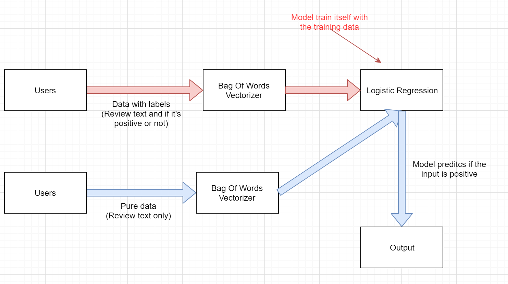
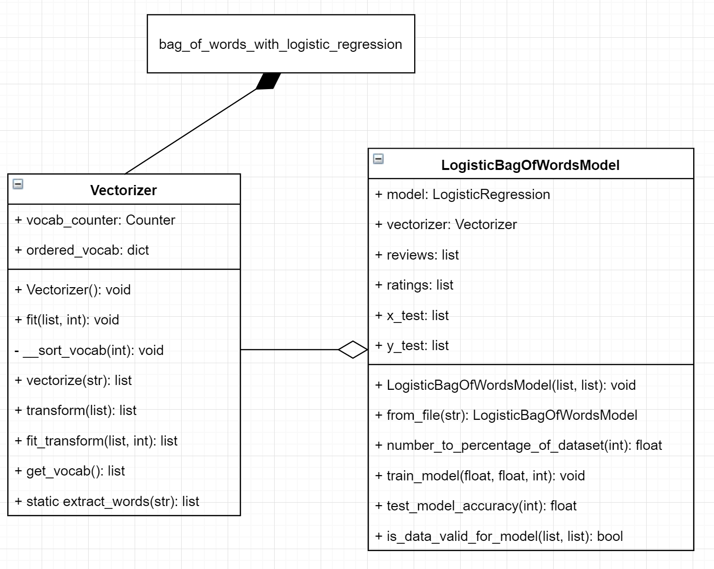
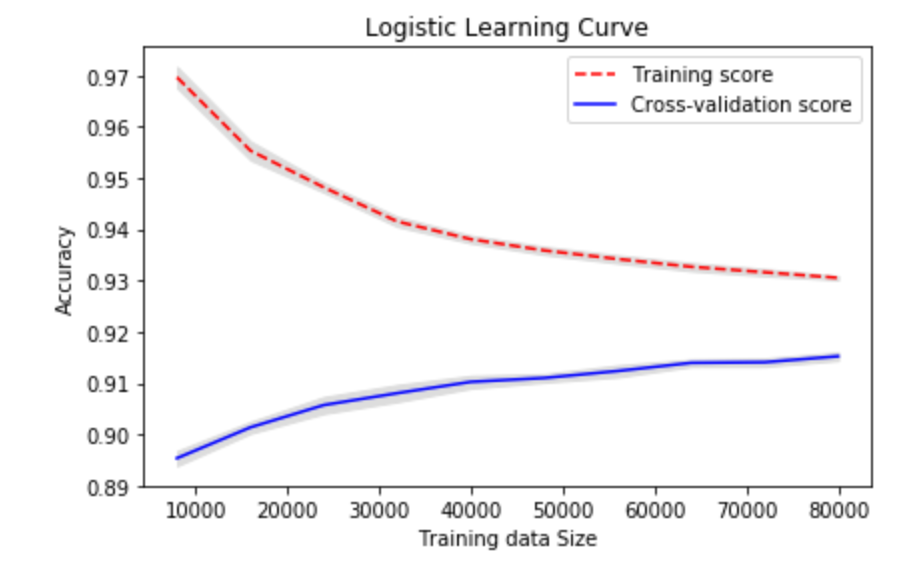

After negotiating with our clients, we set our goal for the first prototype to be implementing a “bag of words” vectorizer with maximum vocabulary limit from scratch, applying Logistic Regression class from scikit-learn library to construct a machine learning model and evaluating the model with varies methods.
The model is supposed to solve a simplified version of the question -- it takes the comment text as input and output whether it’s a good review (rating >= 3) or not. In other words, this is a binary classification model and the decision made by the program should be a 1 or 0 (yes or no), and the model could make this decision based on a probability value between 1 and 0 (eg. 0.67) that is output by the trained program.
System Architecture
To use our program, user needs to first pass in some labelled data, which is review text with a binary number indicating if the review is positive or not. Our program then uses Vectorizer to convert text into a numerical representation. The Logistic Regression model then trains itself with those data.
After training, user can pass in any data with text only. Our program converts the text in the same way, and the Logistic Regression model will predict if the input text belongs to a positive or negative review.
UML Diagram
In our current implementation, Vectorizer is a “bag of words” class that tokenizes each word and coverts a string into a list of numbers, so machine learning algorithm is able to use the result to train a model. The LogisticBagOfWordsModel is a wrapper class for scikit-learn library’s LogisticRegression class. Initial it was written to hide the complexity of the library class. However, we then realized we had to use the original class to carry out more advanced evaluations on the model, so we decided to remove it from the experimental file bag_of_words_with_logistic_regression (and potentially remove it from the model in the future). Although it is not used anymore, it provided us with a very good understanding of how the algorithm works.
About the bag_of_words_with_logistic_regression -- it’s not actually a class or program, it’s a code written in Jupyter Notebook with markdown comments and diagrams. Its purpose is to show the use of our code, as well as evaluate and carry out experiments on our model.
Implementations of Finished Functionalities
As mentioned above, our current program is capable of taking in lists of comment text, converts them into numerical representations, trains a binary classification model based on the rating of the reviews and finally produces a model that can predict if a review is positive or negative by looking at the text only.
To achieve the numerical conversion, a “bag of words” vectorizer is implemented. The object first takes in the text and fits itself -- i.e. it extracts words from the text, counts their occurrence while ignores the cases and symbols. It then sorts them according to their frequencies, and assigns each unique word with an index as its numerical representation. After fitting, it is able to convert any text by taking in a list of string and outputting a numerical matrix. If the matrix is needed to be converted back to human-readable strings, the object can also return a copy of its vocabulary by calling get_vocab() method.
With this implementation, if the program needs to speed up, the object can be configured to only use 5000 words that occurred most frequently. That way, training algorithms can be executed much more quickly and the performance of model won’t be affected heavily.
To implement our logistic regression bag of words model we used the scikit-learn’s LogisticRegression class. It has some nice methods and properties that allow us to apply logistic regression by just giving it X and Y data sets to train on -- With the Vectorizer, we can produce a matrix that can be used as the X training set. The corresponding Y training set is just a list of values 1 or 0 which can be produced by assuming that any review with more than 2 stars is positive (even if mildly) and 2 stars or less is negative.
LogisticRegression’s fit() method can be called using the matrix of X and the Y set in order to train the object. Then we can use methods like score() to get accuracy percentage for a given set of reviews or predict() and predict_proba() to get individual probabilities for a given list of input values.
To put the everything together we wrote a kind of wrapper class called LogisticBagOfWordsModel which handles the use of Vectorizer and LogisticRegression internally. The class also offers uses of the Pandas library to extract reviews and ratings from a .csv file and putting them into lists. Training can be done by just assigning how many reviews are to be used for training and testing is done similarly.
Experiments and Evaluations
Apart from the actual implementation, experiments and evaluations are also very important aspects of our project. We used Jupyter Notebook to run the experiments along with nice looking comments and graphs.
For evaluation, we made sure to use the correct methodoloy so issue of “overfitting” will not stay undetected. This issue occurs when same set of data is used to both train and test model. It causes the evaluation to give a very high accuracy, while the actual performance of the model when feeding in different data can be much lower. To solve this issue, we used scikit-learn library function train_test_split to split data into different training and testing sets and used them respectively.
In addition, since random dataset is picked as training and test data, model’s performance can vary depending on how data is split. To reduce the randomness in our evaluation, we used k-folds cross-validation score instead of just plain accuracy on a set of data. It simply divides the data into k groups, picks 1 group as testing data and rest k-1 groups as training data, and then evaluates the model based on all k possible combinations.
We also carried out experiments on the performance of model with different vocabulary limits and training data sizes. To show the trend clearly, we decided to draw a learning curve, which basically shows how model score on training data and testing data varies with data size. We used scikit-learn’s learning_curve to generate a list of scores, and used matlabplot to draw them on a graph.
